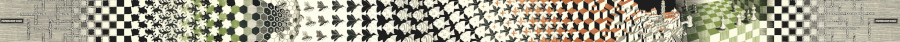

Access to frequent bus routes versus population density in Salem, Oregon
The book Trains, Buses, People by Christof Spieler has some awesome maps of cities across the US showing the availability of transit to their populations. It includes maps for Portland and Eugene so I wanted to make one for Salem too.
This map highlights areas which are within a quarter mile and a half mile of a bus stop served by a frequent (every 15 minutes) bus route. Spieler chooses the 15 minute cutoff because "at that level of service, a passenger can just show up to a station without consulting a schedule." It includes population density, with redder areas being more dense, so we can see whether dense areas are being served by the buses.
The half mile and quarter mile zones can be toggled using the button in the top right of the map.
Data:
Population data by census block group from the U.S. Census Bureau, 2016 American Community Survey 5-Year Estimates
https://factfinder.census.gov/faces/nav/jsf/pages/index.xhtml
Lists of bus stops with frequent service from Cherriots
https://www.cherriots.org/services/
Building the map itself:
Bus stop locations from Cherriots
https://www.cherriots.org/data/
Oregon census block group shapefiles from the U.S. Census Bureau
https://www.census.gov/geo/maps-data/data/cbf/cbf_blkgrp.html
I used QGIS to merge the shapefiles with the data and generate the geometry for the quarter-mile and half-mile regions. Each layer was exported as a geopackage, then converted to GeoJSON using GeoPackage JS (on this page). The final map was built in JavaScript using Leaflet.
I originally made this map as a rasterized image exported from QGIS,
which I posted on reddit.
Antonio R. Vargas
12 Dec 2018